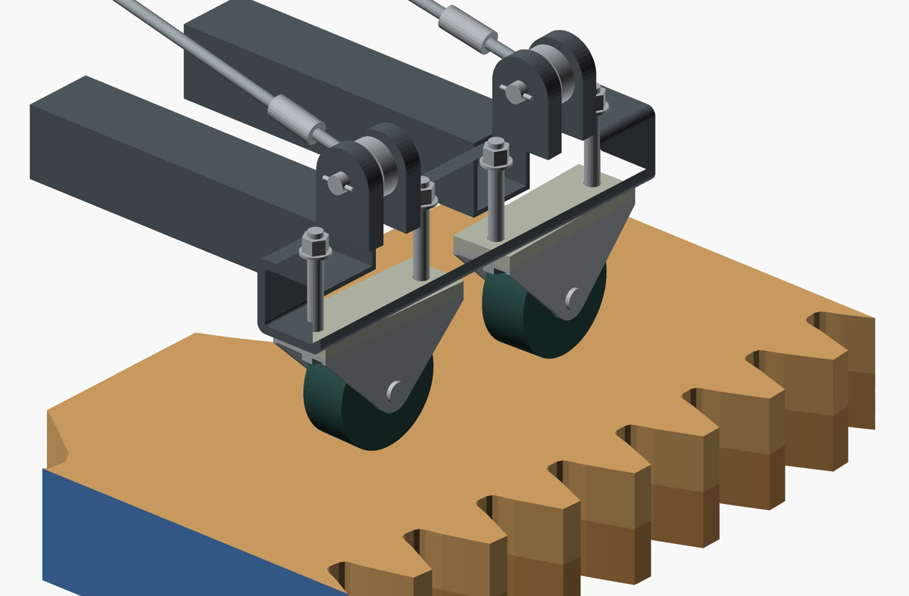
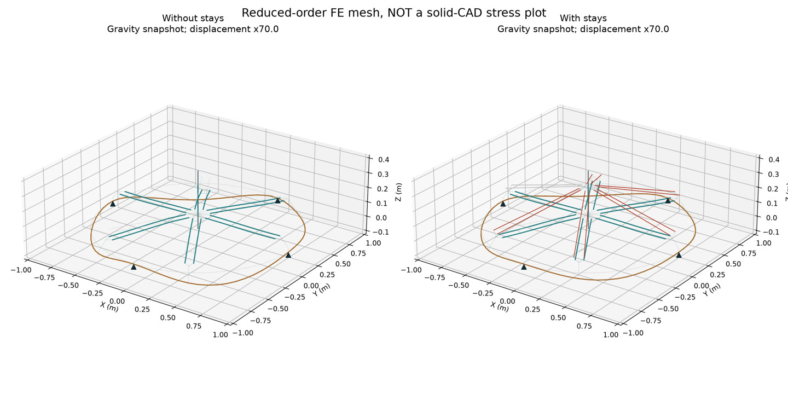

Dylan
Becchetti
Mechanical engineer building manufacturing tools and engineering software.
At Cardinal Glass, I built a production tracker the R&D team used at shift handoff. At Lehigh, I designed the gear assembly shown here. I also built Midas, a platform for running and checking research experiments.
Lehigh B.S. expected January 2027 · U.S. remote
Engineering automation, systems and software tooling

Ring turnsPlanets spinSigns orbit
Cardinal Glass
Across three summers, I worked on manufacturing problems with engineers and operators. In 2025, I built an Excel/VBA tracker for R&D shift debriefs. I also worked on weekly reporting that brought unit-level quality records, production reports and work orders into one operations scorecard.
01 / Source logic
| Input | Reporting rule |
|---|---|
| Unit ID | YYMMDD + sequence |
| Week bounds | 250605000–250611999 |
| Quality result | Pass / Fail |
| Defects | Up to three per unit |
02 / Weekly scorecard
| Metric | Demo result |
|---|---|
| Units inspected | 42 |
| Failed units | 12 |
| Primary particle failures | 6 |
| Particle / all units | 14.3% |
03 / Primary defect frequency
| Defect | Occurrences |
|---|---|
| Particle · Surface | 6 |
| Coating · Pinholes | 3 |
| Handling · Scratch | 3 |
Reporting that follows the manufacturing process. I built reporting around a quality log with more than 10,000 unit records, linking date-coded IDs to weekly failure counts, defect reports and delivery review. The scorecard also drew from wide end-of-day reports and a separate yield workbook. I worked through rolling meter counters, downtime allocation, date-based yield averages and three week selectors that navigated existing reports without losing their formulas or comments.
Purchasing records with usable context. In a separate Smartsheet workflow, I brought a legacy Excel inventory alongside the existing purchase-order log. I kept the familiar entry layout, added part-description lookups and identifier reconciliation, and created a separate maintenance-priority report so reviewing parts would not disturb the purchasing records. Debugging same-day orders exposed a crucial limit: purchase history alone cannot establish actual stock on hand.

Measurement → analysis → investigation
The average was only part of the story.
I measured cleanroom outlet airflow using a capture hood and micromanometer, then compared repeat readings in Excel. I corrected blank-value and structured-reference errors, used paired summaries and conditional formatting to examine local variation, and brought system-level questions to engineering leadership.
Flow changes guided further investigation; they did not establish filter leakage or a proven quality improvement.
Public reconstructions use fictional records. Original employer workbooks, production measurements and facility layouts are not shown. The daily debrief tracker and weekly scorecard were separate tools; this demo reconstructs the better-documented weekly system. Inventory stock forecasting and timed Excel refresh had unresolved limits. Measured savings are not established.
Wilbur Powerhouse
I did much of the mechanical design and built all of the parametric OpenSCAD models for our year-long Lehigh capstone. My team and I are fabricating a kinetic sculpture designed to hang above a classroom at Lehigh’s Wilbur Powerhouse. I used a 1:1 assembly model to design the parts we’ll build.
- Outer ring diameter
- 79.5 in
- Drive reduction after the ring revision
- 10:1
- Project
- Two semesters
When we took the original concept to full scale, the problems changed. I revised the assembly through sponsor reviews, replacing a plywood carrier concept with welded steel arms and cable stays. To fit the rolling supports, I widened the plywood ring from 1,880 to 2,020 mm. I kept the inner teeth that mesh with the planet gears, staggered the plywood seams, and moved the motor mount 70 mm to keep the drive engaged.
My team and I CNC-cut a full-size plywood planet gear and completed the first welded gear unit. The real sleeve measured about 1.02 inches across, so the first gear needed sanding and the next cut needed more bore clearance. That was a fit check on a physical part while the rest of the assembly was still in fabrication.




Adding cable stays reduced predicted movement at the planet support and shifted more load to the center bearing. I used the earlier study to inform the carrier design. The later caster geometry and installed assembly require their own checks.
Midas Futures
I built Midas to test whether a futures strategy can survive trading costs and the rules of funded-account evaluations in a market where independent traders compete with professional firms. I started with an equities scheduler, rebuilt it for live futures data and a Raspberry Pi, then developed the Python research and validation system around it.
The tricky part was getting replay and forward evaluation to make the same decision from the same data. They disagreed on which completed bars counted toward volatility and which price to use at exit. I unified those rules in a shared state machine. A retained regression matched all 228 session decisions and 225 modeled trade lifecycles against a sealed reference.
I built a cloud runner that saves progress between simulations. It can resume a campaign from verified results and reuse unchanged controls. The simulator makes strategies share one account’s risk limits and follows the account through evaluation, funding, fees, payouts and failures. A separate Railway check reproduced all 11 decision files from a local run byte for byte.
Cloud experiment · November 10, 2026
Would adding a second signal rule help?
I ran 72 new account simulations and compared them with 144 saved controls. Each path models one account over a historical window under a fixed set of trading rules and costs. The primary comparison matched eight starting dates per signal source over 180 sessions with higher modeled costs.
| Signal source | Median modeled cash change | Funded failures |
|---|---|---|
| Source A | +$491 | 3 → 1 |
| Source B | +$485 | 0 → 1 |
A separate November 10 screen tested 288 session and exit variants under two cost settings. It used the prior 60 sessions to choose each policy, then tested it on the next 30. Both groups with a selected policy had negative results at higher costs. The other four groups produced no selection, and none advanced to account simulation.

I built the dashboard to distinguish research results, Practice fills and actual cash. One installed version showed 1,410 modeled account cases across 705 strategy variants. It made it possible to see when a modeled account passed its evaluation but still lost money after fees.
- Strategy. A validated strategy spec and parameter pack define what to run. The registry keeps a strategy’s decisions separate from market data and order handling.
- Batch campaigns. Freeze the historical windows, cost settings, strategy inputs and expected case IDs. The cloud runner writes a checkpoint for each completed case and checks it before skipping work on resume.
- Ablation Factory. Change one part of a strategy and compare it against saved controls. Preserve each account’s fees, payouts, failures and the inputs that produced them.
- Monte Carlo. Test whether a result could have appeared by chance. One diagnostic repeated the original selection process across two sets of 100,000 randomized draws.
- Practice. Research results are reviewed before any separate authorization for broker Practice. The execution layer reconciles orders and fills independently of the research ranking.
Historical backtest and comparison runs
Historical backtest
+$7,586
Modeled net P&L across 365 signals and 374 dates, June 2024–December 2025. The comparison used one micro Nasdaq futures contract, a fixed 58-minute hold and $7.24 in modeled round-trip costs. The strategy’s modeled max drawdown was $2,089.
| Same dates and cost model | Net P&L |
|---|---|
| Strategy direction | +$7,586 |
| Always long | −$2,311 |
| Always short | −$2,974 |
Cumulative modeled net P&L by month
- Strategy direction
- Always long
- Always short

Operalith
I founded Operalith so people could build a workspace around how they work. Start with the tools you need, add features as you go, and change how the workspace looks without moving your records. I’m building it into a product where users can pick tools and add workflows from one catalogue as their needs change.

I built a catalogue for choosing tools and adding compatible features. Records stay connected as the workspace changes. For example, a project can link to the original enquiry and the supplies it needs. The public demo keeps sample work in your browser. A separate, invited solo pilot saves fictional records to an account.
I designed account saves to prevent duplicate writes and stop an older browser tab from overwriting newer work. In a hosted test, an edit survived reload and undo restored the previous value while keeping all 11 prior history entries.
Visit OperalithFormsby
I started Formsby to connect people with what they’re looking for across the websites they already use. Someone’s request on one site might have an answer on another. My idea was to build one system that could understand the need, find a relevant person or resource, and help make the connection. Housing was my first test of a much broader product.
Inside the housing application
- 01Save the requestKeep the signed-in user, original form and search settings together.
- 02Interpret the needSeparate budget, location, timing, must-haves and preferences.
- 03Search across sourcesRun source adapters, merge duplicate URLs and record connector failures.
- 04Evaluate each candidateSave the source evidence, score, explanation and search-run identity.
- 05Return the latest resultsKeep private results tied to their run, with separate partial and failed states.
I spent months working through the product and its Python prototype. I separated discovery, interpretation, matching and communication so new categories could share the same core. I built city and category lookups, persistent lead IDs and parent-linked match IDs. When a source returned HTML but no records, I traced the problem to outdated selectors and restored full-text extraction in a five-result test.
The harder problem was deciding what counted as a useful match. A directory link or a plausible description wasn’t enough. I wanted a specific option with enough source information for someone to act on. That requirement led me toward fetching and evaluating individual offers, keeping the original request attached, and recording why a candidate was selected.
In the later housing build, I implemented signed-in intake, background job dispatch, source adapters, duplicate removal, ranked results and payment handling. Requests, runs, listings and evaluations have separate records. If one connector fails, the run can retain the other results and show a partial status. The dashboard returns the latest run’s results for the signed-in user.
A design decision beyond the housing prototype. For the original paid-introduction concept, I designed a flow that prepared a match packet before checkout and tied it to a persistent ID. Payment would retrieve the saved packet instead of repeating the search and producing a different answer. The Python prototype included file-based unlock logic. Completing that delivery flow, expanding categories and adding private conversations are part of the broader product I want to build.
Walk through a search with a duplicate and a failed source
Fictional example of the code paths. A renter asks for a one-bedroom under $1,500 that allows cats. Two sources return the same listing URL, and a third source times out. The job keeps one copy of the listing, evaluates it against the request and records the failed source.
The run can return the candidate with a partial status. The dashboard reads results from that run for the signed-in renter, so an older listing from a previous run does not reappear as a new result. The example illustrates the behavior of the code and does not use live listings.
Started in 2025, paused after the later housing build, and now returning to development. Python · Next.js / React · PostgreSQL / Prisma · Inngest · Stripe
Game production tools
With Scanned Leverage and Optimized Production, I’m testing a factory approach to game development. I collect Roblox market data, look for recurring mechanics and asset needs, and turn those findings into reusable components. A build pipeline can then combine the components under different settings to test original game concepts.
How I tested the build pipeline
I built a Python pipeline that compiled two Roblox places from the same Luau components. Tests check that different settings change the output and invalid inputs are rejected. I stopped a separate collector prototype at storyboard review when its second trip offered too little variation. The same approach can be used for other products that need to turn research into reusable modules and test multiple configurations before choosing which to build.
Résumé & contact
I’m finishing my Mechanical Engineering B.S. and Materials Science and Engineering minor at Lehigh. I expect to complete coursework in December 2026 and receive my degree in January 2027. I’m interested in full-time, U.S. remote engineering work.